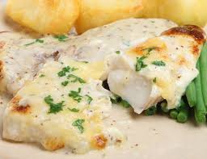

Peixe assado ao molho de iogurte e ricota

Ingredientes:
- 8 postas de pescada branca
- farinha de rosca para empanar
- 1 cebola ralada
- 1/2 colher (chá) de margarina
- 1 colher (chá) de colorau
- 2 tomates grandes e maduros picados
- 2 colheres (sopa) de ricota
- 2 colheres (sopa) de iogurte desnatado
- suco de 1 limão
- 2 copos (requeijão) de água
- 1 colher (sopa) de cheiro verde
- Sal e pimenta do reino à gosto
- Marinar as postas na água com o sal, pimenta e o suco de limão por 1 hora e 1/2.
- Separe 2 postas e reserve.
- As demais postas passe na farinha de rosca.
- Coloque em um refratário untado.
- Leve para assar por 30 minutos em forno médio coberto com papel alumínio.
- Pegue as 2 postas separadas e desfie ainda cru.
- Regue com a cebola ralada e a margarina.
- Refoque
- Junte os tomates, cheiro verde, colorau, sal e pimenta.
- Ferver em fogo baixo com 1 copo de água.
- Não deixe secar a água.
- Acrescente a ricota e o iogurte.
- Mexa bem até ficar homogêneo.
- Este molho coloque por cima do peixe assado.
- Leve ao forno novamente por 5 minutos.